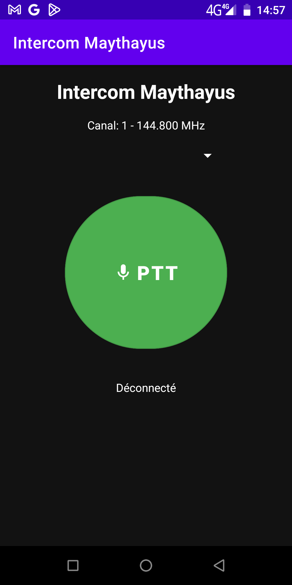

Urgence & radio · Android
Intercom2SOS
Talkie-walkie, SOS et radio : le pack survie Android. Push-To-Talk via un module radio USB (Android + Raspberry Pi Pico), mode SOS avec envoi GPS et message vocal sur les ondes, capteur cardiaque Bluetooth en option.
Fonctionnalités
- Intercom Push-To-Talk piloté par un module USB (fréquence, état, PTT)
- SOS : GPS haute précision, message d'urgence partageable, appel 112 / 911
- Transmission « à l'antenne » : GPS + message vocal automatique
- Mode TEST et mode RÉEL pour s'entraîner sans déclencher d'alerte
- Fréquence cardiaque d'une bague / capteur BLE incluse dans le message
